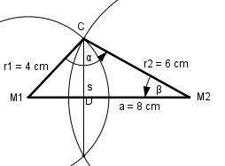

Aufgabe 164 Die Mittelpunkte zweier Kreise mit den Radien r1 = 6 cm und r2 = 4 cm liegen 8 cm auseinander. Wie groß ist die gemeinsame Sehne s?

Im Dreieck M1M2C: Fall SSS: Cosinussatz: a2 = r12 + r22 - 2*r1*r2*cos α |+2*r1*r2*cos α a2 + 2 * r1 * r2 * cos α = r12 + r22 |-a2 2 * r1 * r2 * cos α = r12 + r22 - a2 |:2*r1*r2 r12 + r22 - a2 cos α = ----------------- = 2 * r1 * r2 42 cm2 + 62 cm2 - 82 cm2 = --------------------------- = 2 * 4 cm * 6 cm = -0,25 --> α = 104,5° Fall SSW: Sinussatz: a r1 ------- = ------- | *sin β sin α sin β a * sin β --------------- = r1 |*sin α sin α a * sin β = r1 * sin α |:a r1 * sin α sin β = ------------ = a 4 cm * sin 104,5° 4 cm * 0,9681 = ------------------- = --------------- = 8 cm 8 cm = 0,4841 --> β = 29° Im Dreieck M1DC: s/2 sin β = ------ |*r2 r2 r2 * sin β = s/2 | *2 s = 2 * r2 * sin β = = 2 * 6 cm * sin 29° = 2 * 6 cm * 0,4848 = 5,8 cm